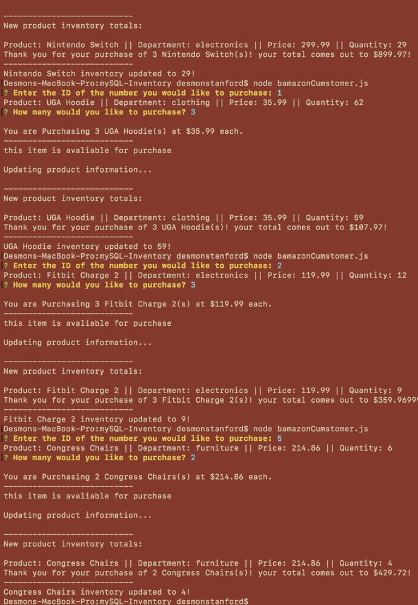

<div class="cbp-l-project-title">mySQL Inventory</div>
<div class="cbp-l-project-subtitle">by D Stanford</div>


    


<div class="cbp-l-project-container">
    <div class="cbp-l-project-desc">
        <div class="cbp-l-project-desc-title"><span>Project Description</span></div>
        <div class="cbp-l-project-desc-text">
                A CLI node application that utilizes a mySQL database to create an Amazon like storefront. The app takes in orders from the user and removes the stock from the store's inventory.
</div>
    </div>
    <div class="cbp-l-project-details">
        <div class="cbp-l-project-details-title"><span>Project Details</span></div>

        <ul class="cbp-l-project-details-list">
            <li><strong>Date</strong>March 2018</li>
            <li><strong>Tech</strong>mySQL, Node.js</li>
        </ul>
        <a href="https://github.com/dlsstanford/mySQL-Inventory" target="_blank" class="cbp-l-project-details-visit btn btn-dark">GitHub</a>
    </div>
</div>

<br>
<br>
<br>
